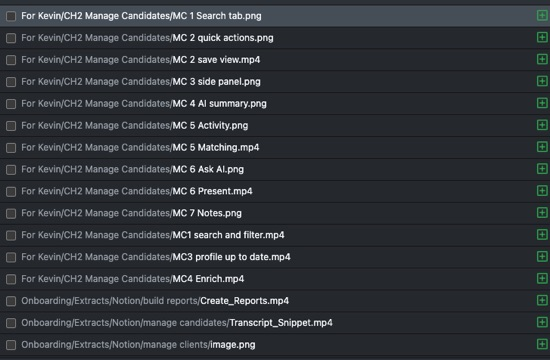
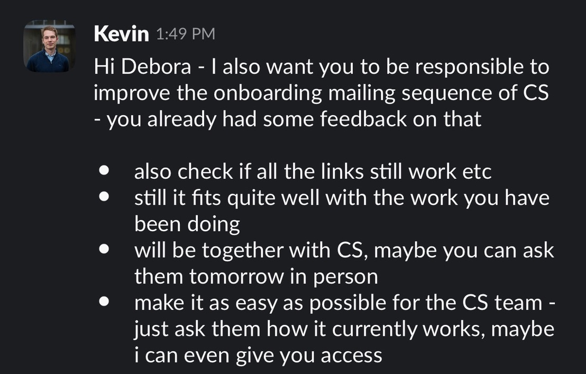
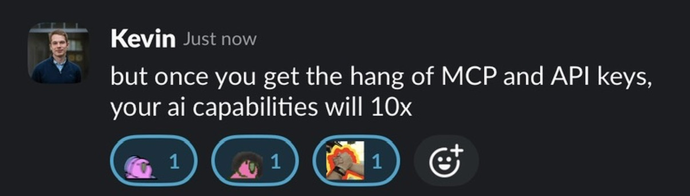
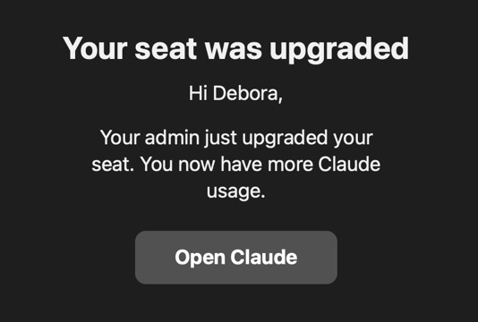
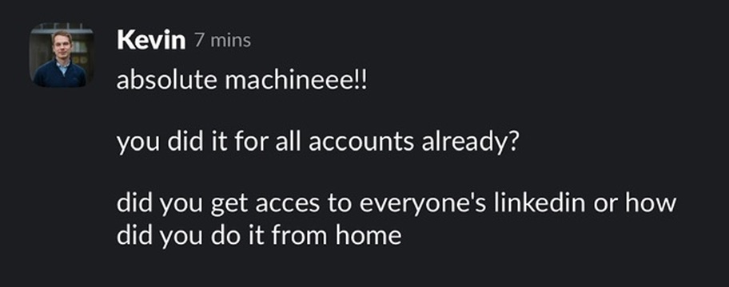
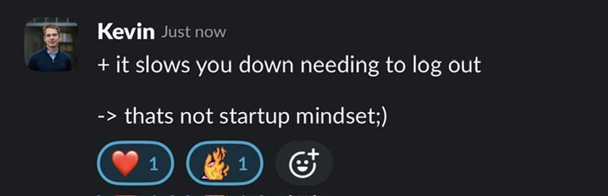
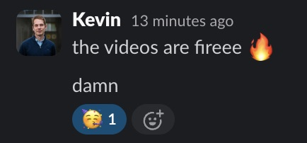

Notion → Mintlify
The onboarding docs lived in Notion. They now live in Mintlify, because I moved them there, one page at a time, and then rewrote basically all of it.
Before — Notion
After — Mintlify
Debora's internship recap
I know you're really curious about my internship. You have to wait.
It counts down for a reason. No, there is no skip button — I checked, I asked three different AIs, and one of them lied to me about it.
It's time
Turn your sound on. Seriously, turn your sound on.
A recap, unwrapped ;)
Today I wanted to tell you all about my experience at Spott.

scroll
Kevin. A friend of a friend of a Kevin, and suddenly there's a name in my head and a company I'd never heard of. He referred me. He would later become my supervisor, which means he is personally responsible for all of this.
I slid into Manu's DMs. Bold, in hindsight. He replied. He also mentioned — politely, reasonably — that they already had interns.
So I made a pitch deck. About myself. Eleven slides. Sections. A TL;DR. A slide literally titled "Why me?" Nobody asked for this.
We had a call. And then I was an intern. That's it. That's the whole trick.
 ← that's me
← that's me
In the team photo on slide 9 of the deck I sent them, I am sitting front row, far left, looking very much like I belong there. I was not at that photoshoot. I had never met any of these people. I was, at the time of this photograph, not employed by this company.
The lesson is simple and I will die on it: always edit yourself in. Worst case, someone notices the lighting is wrong. Best case, nobody checks, and by the time they do, it's true.
Mostly, I asked questions. Here is a representative sample. The counter is real.
The onboarding docs lived in Notion. They now live in Mintlify, because I moved them there, one page at a time, and then rewrote basically all of it.
Before — Notion
After — Mintlify
Not "tidied". Rewrote. Every page, in a voice a new hire could actually read on their first morning without wanting to lie down.
Restructured the whole thing so that a person on day one can find any answer in about two clicks, instead of scrolling a Notion page until they give up and ask in Slack.
Every flow on the product, captured, trimmed, and dropped into the docs so the words have something to point at. There are a lot of these.

Recorded a full onboarding walkthrough with Sebastian, then cut it into something a human being would voluntarily watch.
Filmed, framed, and edited. WE GOT THE SHOT is a thing I typed in Slack at 10:51 in the morning and I meant it sincerely.
Picked apart the CS onboarding mailing sequence, checked every link still worked, and reworked the flow with Naomi.

Nathan was out. Things still needed doing. I did the things.
From nothing. Built the voice, queued the posts, got told the first batch "feel really ai generated atm", and rewrote them until they didn't.
An AI report. Reworked posts. A wrap-up presentation. Clips, framing, thumbnails, and a running list of small things that were broken and are now not broken.






I wrote something for you. Just you — not a group message with your name swapped in. Enter your code to read it.